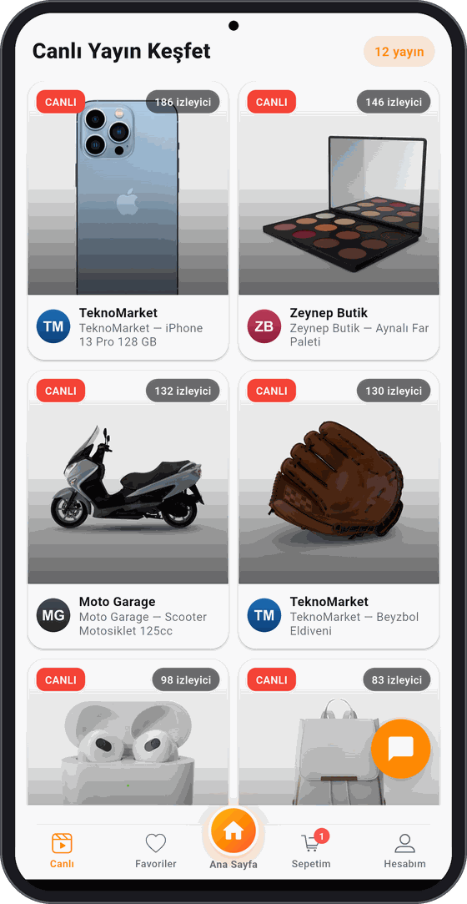
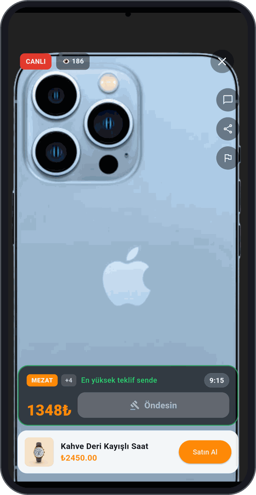
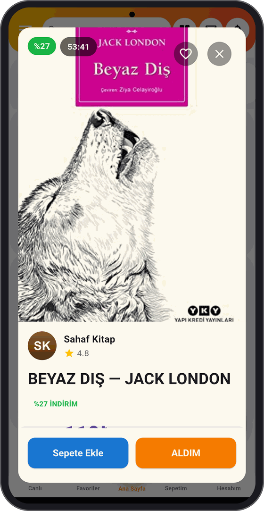
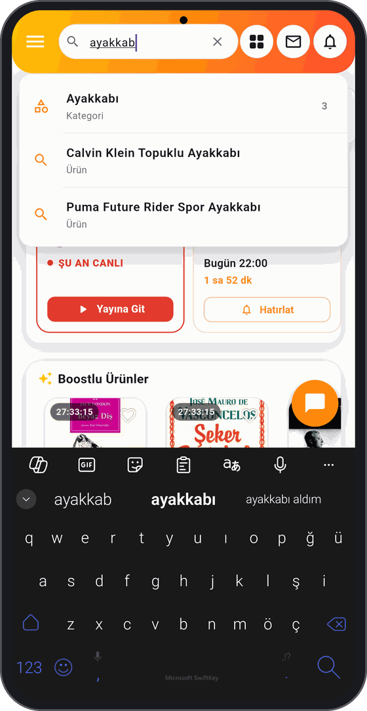
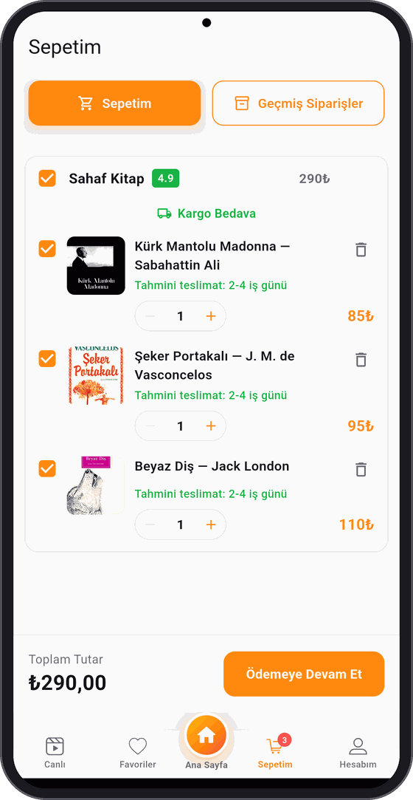
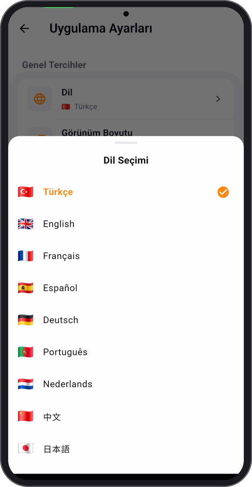
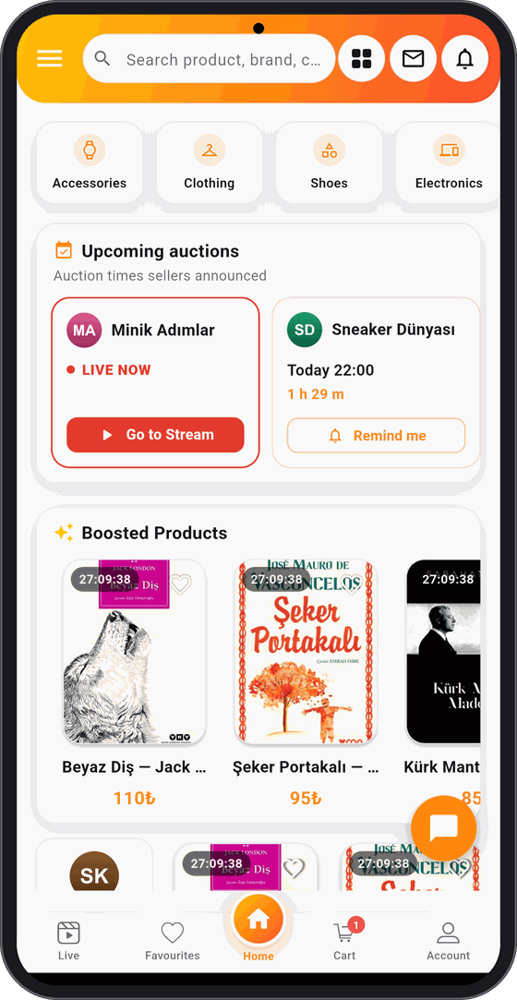

Dakika dolmadan,
ALDIM de!
Yeni nesil mezat burada. Satıcılar ürünlerini süreli mezata çıkarır; sen beğendiğini tek dokunuşla anında satın alırsın.
Kurulumda "bilinmeyen kaynaklara izin ver" onayı gerekebilir.

Alışverişin en heyecanlı hali
Sosyal medyadaki dağınık ve güvensiz canlı satışlara son. Zamanlı, hızlı, düzenli ve güvenli mezat — tek uygulamada.
Tek dokunuş: "Aldım"
Adres ve ödeme bilgilerin hazır. Beğendiğin ürünü tek tıkla anında satın al.
Süreli mezat çarkları
Ürünler 5 dakikalık, 1 saatlik, günlük veya haftalık mezatta. Süre dolunca kalkar — fırsatı gören kapar.
Güvenli ödeme
Ödemen ürün eline ulaşana kadar güvence altında. Önden havale yok, güven sorunu yok.
Canlı yayında mezat
Satıcı ürünü kamerada gösterir; mağaza puanları ve yorumlarla kimden aldığını bilirsin.
Nasıl çalışır?
Üç adımda mezat heyecanı.
Satıcı ürünü yükler
Görseller, adet ve beden önceden girilir. Alıcı her bilgiye anında ulaşır; satıcı aynı soruları tekrar tekrar cevaplamaz.
Mezat süresi başlar
Ürün seçilen slotta satışa çıkar ve geri sayım başlar. Süre dolunca otomatik yayından kalkar.
"Aldım" de, bitti
Kayıtlı bilgilerinle tek dokunuşta satın al. Ödemen ürün eline ulaşana kadar güvencede.
Neden süreli mezat?
İkinci el alışverişin en büyük sorunu ürün değil, bekleme. İlan haftalarca durur, pazarlık mesajlaşmayla sürüncemede kalır, iki taraf da yorulur.
Klasik ilan
- ✕Ürün haftalarca ilanda bekler
- ✕"Son fiyat?" mesajları bitmez
- ✕Alıcı karar vermez, erteler
- ✕Aynı sorular tekrar tekrar sorulur
- ✕Ödeme için karşılıklı güven aranır
ALDIM mezatı
- ✓Ürünün bir süresi var, geri sayım işler
- ✓Fiyat baştan belli, pazarlık isteğe bağlı
- ✓Süre baskısı kararı hızlandırır
- ✓Beden, adet, durum önceden yazılı
- ✓Ödeme uygulamada, güvence altında
Peki bu sana ne kazandırıyor?
Mezat iki tarafı da hızlandırır — biri satmak, diğeri kaçırmamak için acele eder.
Fırsatı gören kapar
Beğendiğin ürünün üstünde bir sayaç var. Süre dolmadan "Aldım" dersen senin olur.
- ⏱Beklemek yok Satıcının cevabını beklemezsin; fiyat zaten yazıyor.
- 👀Ürünü canlı görürsün Satıcı yayın açtığında ürünü kamerada inceler, sorunu anında sorarsın.
- 🛡Paran güvende Ödemen ürün eline ulaşana kadar güvence altında; önden havale yok.
- ↩Cayma hakkın saklı Teslimattan sonra 14 gün içinde iade edebilirsin.
Ürünün rafta beklemesin
Ne kadar acelen varsa o kadar kısa süre seç. Süre bitince ürün kendiliğinden yayından kalkar.
- ⚡Süreyi sen seçersin Hemen satmak istersen 5 dakika, sabırlıysan 1 hafta. Karar senin.
- 💬Aynı soruyu 20 kez cevaplamazsın Beden, adet, ürün durumu önceden girilir; alıcı hepsini görür.
- 🎥Canlı yayında satarsın Ürünü yayına sabitlersin, izleyici doğrudan oradan satın alır.
- 🤝Pazarlık senin kontrolünde Teklif almak istemiyorsan kapatırsın; istiyorsan açarsın.
Mezat böyle görünüyor
Her üründe geri sayım. Süre bitmeden karar vereceksin.





Uygulama 13 dilde
Dilini bir kere seç, uygulamanın tamamı o dile geçsin — menüler, ürün ekranları, mezat, ödeme ve bildirimler dahil.
Türkiye'de satıyorsun, dünyaya satabilirsin
Yurt dışındaki alıcı uygulamayı kendi dilinde açar; senin ürünün onun karşısına kendi dilinde çıkar. Ayarlar > Dil menüsünden tek dokunuşla değişir, uygulamayı kapatıp açmana gerek yok.


Satıcıyı gör,
ürünü canlı izle
Sosyal medyada dağınık şekilde yapılan canlı satışları tek çatı altına topluyoruz — ödemesi güvenli, kaydı düzenli.
- ✓Satıcı ürünü kamerada gösterir, sorularını anında cevaplar
- ✓Yayında teklif verirsin — fiyat yükselir, en yüksek teklif kazanır
- ✓Son saniyede gelen teklif süreyi uzatır; kimse son anda kapıp kaçamaz
- ✓Biri satılınca sıradaki ürün mezata çıkar
- ✓Yayın içi sohbetle diğer alıcıları da görürsün
Mezatta kimse mağdur olmaz
Teklif verirken de ürün gönderirken de tek taraflı risk yok. Kurallar iki tarafı birden koruyacak şekilde yazıldı.
Para, ürün eline geçene kadar güvende
- 🔐Satıcıya önden havale yok Ödeme güvence altında tutulur, satıcıya doğrudan para göndermezsin.
- ⭐Kime teklif verdiğin belli Satıcının puanı, mağaza geçmişi ve kargo bilgisi teklif vermeden önce ekranda.
- ⏱️Son saniye oyunu yok Süre biterken gelen teklif mezatı 10 saniye uzatır. Kapanışa 1 saniye kala teklif atıp kaçmak işe yaramaz.
- 📄Ne aldığın yazılı Mesafeli Satış Sözleşmesi ve Ön Bilgilendirme Formu ödeme ekranında; okumadan onaylatmıyoruz.
Mezatı kazanan almakla yükümlü
- 🤝Teklif bir taahhüttür Mezat kapanınca ürün kazananın sepetine mezat fiyatından düşer ve 24 saatlik ödeme süresi başlar. "Kazandım ama vazgeçtim" diye satıcıyı ortada bırakmak yok.
- 🚫Ödemeyene kademeli yaptırım Süre dolarsa sipariş iptal olur ve hesaba yasak gelir: önce 7 gün, tekrarında 30 gün mezata giriş yok; ısrar edilirse hesap donar. Borcu olan yeni mezata teklif veremez.
- 🧾Şişirme teklif yok Teklif tutarını uygulama değil sunucu belirler. Kimse kendi mezatına teklif veremez, üst üste teklif veremez.
- 👤Sahte hesap teklifi yok Teklif için giriş ve doğrulanmış hesap şart; her teklif kimliğe bağlı olarak kaydedilir.
Kısacası: alıcı parasını, satıcı ürününü riske atmadan mezata giriyor. Anlaşmazlık çıkarsa ödeme henüz satıcıya geçmemiş oluyor — çözümü biz yapıyoruz.
Hızlı karar ver, güvenle al
Mezatta süre kısa. Ödeme tarafında tereddüt etmeyesin diye güvenliği baştan kurduk.
Kart numaran saklanmaz
Kartını kaydetsen bile yalnızca son 4 hanesi tutulur. Tam numara ve güvenlik kodu hiçbir yere yazılmaz.
3D Secure ile ödeme
Ödeme, bankanın gönderdiği tek kullanımlık şifreyle doğrulanır.
Ürün eline geçene kadar
Ödemen güvence altında tutulur. Önden havale yok.
Sözleşmeler açık
Mesafeli Satış Sözleşmesi ve Ön Bilgilendirme Formu ödeme ekranında; okumadan onaylatmıyoruz.
Kurumsal
Hakkımızda
ALDIM, sosyal medyadaki dağınık ve güvensiz canlı yayın satışlarına düzen getiren, Türkiye merkezli yeni nesil mezat platformudur. Satıcılar ürünlerini süreli mezatlara çıkarır; alıcılar tek dokunuşla, "Aldım" diyerek güvenle satın alır.
Türkiye'de sosyal ticaret hızla büyüyor; ALDIM, canlı mezat yapan binlerce satıcıyı ve milyonlarca izleyiciyi tek bir güvenli çatı altında buluşturmayı hedefliyor.
İletişim
- Destek: destek@aldimmezat.com
- Kurumsal: info@aldimmezat.com
Teslimat ve İade Koşulları
Siparişleriniz, satıcı tarafından anlaşmalı kargo firmaları aracılığıyla adresinize gönderilir. Teslimat süresi genellikle 1-5 iş günüdür.
6502 sayılı Tüketicinin Korunması Hakkında Kanun ve Mesafeli Sözleşmeler Yönetmeliği uyarınca, teslim tarihinden itibaren 14 gün içinde cayma hakkınızı kullanarak ürünü iade edebilirsiniz. İade edilen ürün bedeli, ürünün satıcıya ulaşmasının ardından ödeme yönteminize iade edilir.
Gizlilik ve KVKK
Kişisel verileriniz, 6698 sayılı KVKK kapsamında; üyelik hesabınızın oluşturulması, siparişlerinizin işlenmesi, teslimat süreçlerinin yürütülmesi ve yasal yükümlülüklerin yerine getirilmesi amaçlarıyla sınırlı olarak işlenir.
Verileriniz; kargo şirketleri, ödeme kuruluşları ve barındırma hizmeti sağlayıcılarıyla yalnızca hizmetin gerektirdiği ölçüde paylaşılır, üçüncü kişilere satılmaz. KVKK m.11 kapsamındaki haklarınızı iletişim adreslerimiz üzerinden kullanabilirsiniz.
Mesafeli Satış Sözleşmesi
Uygulama üzerinden verilen tüm siparişler, sipariş onayı öncesinde alıcıya sunulan mesafeli satış sözleşmesine tabidir. Sözleşme; satıcı ve alıcı bilgilerini, ürünün nitelikleri ile vergiler dahil toplam fiyatını, ödeme ve teslimat bilgilerini ve cayma hakkına ilişkin koşulları içerir. Ödemeler, lisanslı ödeme kuruluşu aracılığıyla güvenli şekilde alınır; kart bilgileriniz uygulamada saklanmaz.
Yasal Belgeler
Kullanıcı ve satıcı sözleşmeleri, KVKK aydınlatma metni, gizlilik ve çerez politikaları ile platformun tüm kural ve politika metinlerinin tam hâline aşağıdan ulaşabilirsiniz.